■ はじめに
まずは、アプリの全体のつくりです。
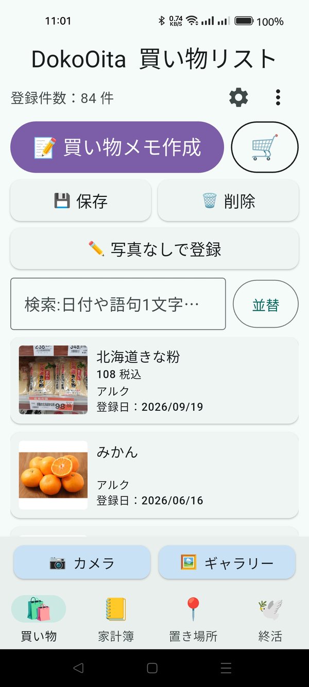
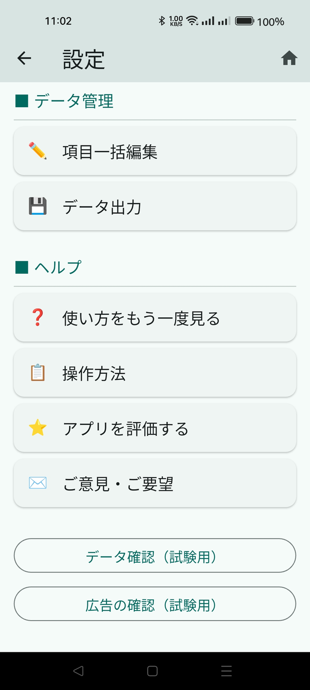
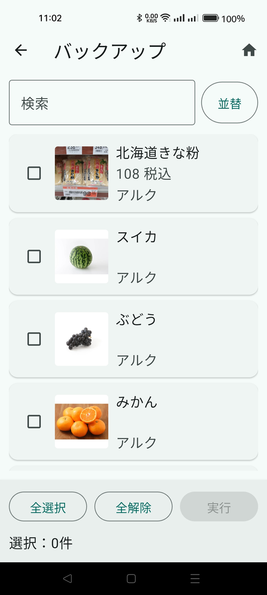
🛍️ 買い物
よく行くお店の品物から、今日の買い物メモを作ります。
- お店の名前を登録するはじめに、よく買い物をするお店の名前を登録します（基本素材のインポート。写真は要りません）。
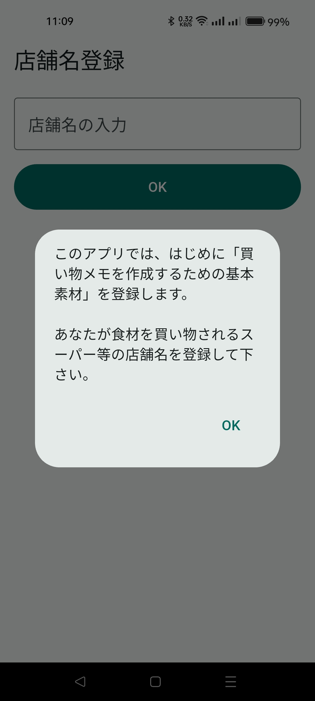
スクショ S04お店の名前を登録する画面（基本素材のインポート）ファイル名：images/s04_material_register.png - 品物を登録する品物は、「✏️写真なしで登録」か、📷カメラ・🖼️ギャラリーで登録します。
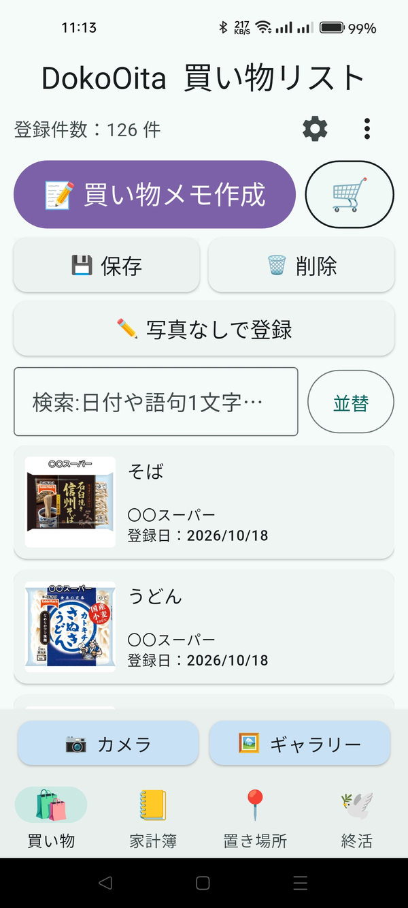
スクショ S05買い物タブのホーム画面（登録のボタンと「買い物メモ作成」が見える）ファイル名：images/s05_shopping_home.png - 買い物メモ作成を押す買い物の日は、ホームの「📝買い物メモ作成」を押します。
- お店を1つ選ぶ「店舗を選択してください」と出るので、買い物に行くお店を1つ選びます（検索で絞り込むと、お店を探しやすくなります）。
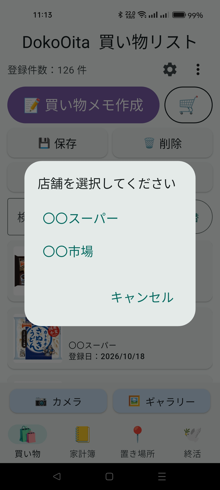
スクショ S06「店舗を選択してください」の画面ファイル名：images/s06_shop_select.png - 買う物に☑を付けるそのお店の品物が並ぶので、買う物に☑を付けて「OK」を押します（「全選択」「全解除」も使えます）。
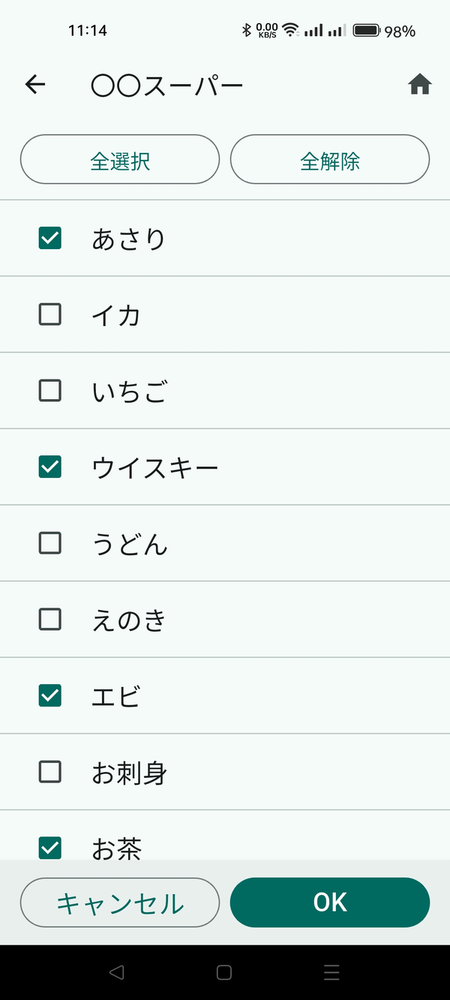
スクショ S07品物を選ぶ画面（☑・全選択・全解除・OK が見える）ファイル名：images/s07_item_select.png - 今日の買い物メモができる今日の買い物メモが出来ます。買った物は、右になぞって線で消します（左になぞると戻ります）。
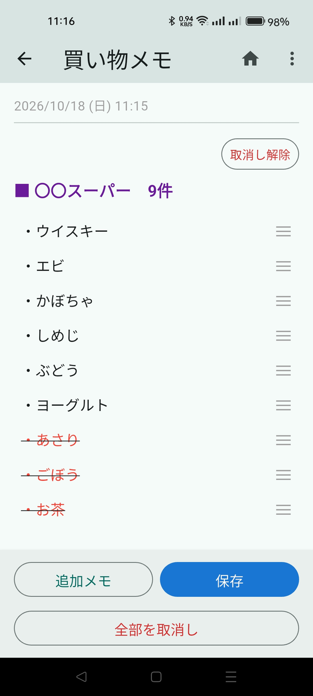
スクショ S08今日の買い物メモ（何個かを線で消した状態）ファイル名：images/s08_memo_checked.png - 売り場を回る順番に並べ替える売り場を回る順番に、並べ替えます。品物の右はしの「≡」を押したまま、上や下へ動かします（ドラッグ＆ドロップ）。
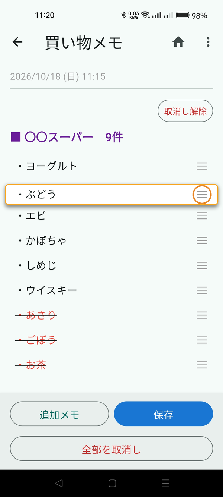
スクショ S09品物の右はしの「≡」を動かしている画面ファイル名：images/s09_memo_drag.png - 並び順を記憶する並べ終わったら、右上の「⋮」を押して「並び順を記憶」を選びます。次からは、「⋮」の「並び順の呼出」で、何度でも同じ順番に戻せます（お店ごとに記憶します）。50音順に戻したいときは、「⋮」の「50音順に並び替え」を選びます。
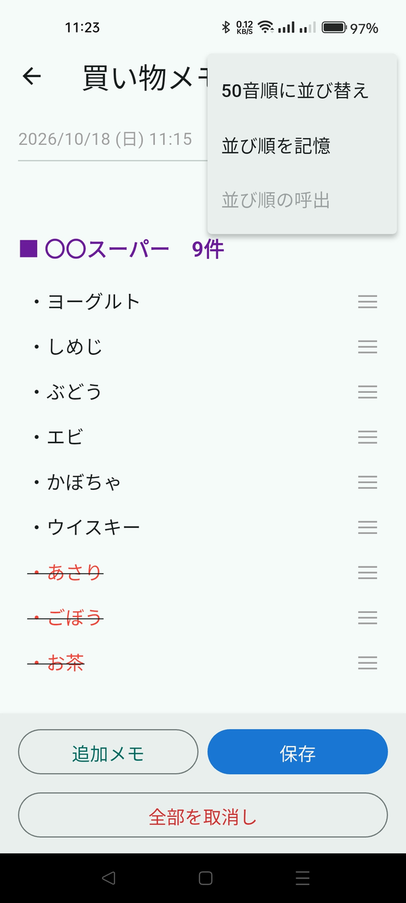
スクショ S10買い物メモ右上の「⋮」を押したメニューファイル名：images/s10_memo_menu.png - メモを足す・保存する「追加メモ」でメモを足したり、「保存」で文字のファイルを保存したりできます。
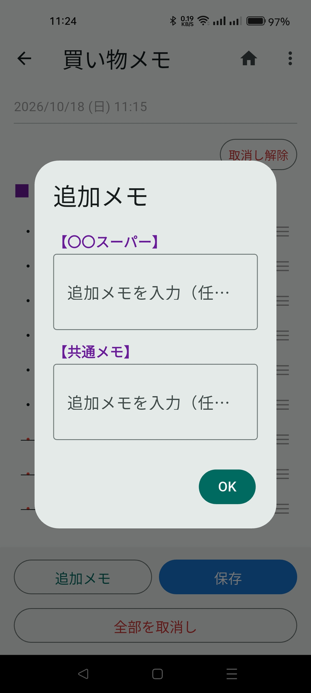
スクショ S11買い物メモ画面のいちばん下（追加メモ・保存・全部を取消し）ファイル名：images/s11_memo_bottom.png - 買い物が終わったら全部を取消し買い物が終わったら、いちばん下の「全部を取消し」を押します。☑や線がすべて消えて、ホームに戻ります（記憶した並び順は消えません）。
あわせて知っておくと便利なこと
- 複数のお店の分を作ったあとで、1つのお店だけ表示したいときは、ホームの検索窓にそのお店の名前を入れて、「🛒」アイコンを押します。
- ホームの🛒アイコンを押すと「今日の買い物メモ」が開けます。
- 「並び順の記憶」は、ZIPにも入ります。⚙設定の「データ出力」で「ZIPエクスポート（画像込み）」を行い、新しいスマホで「ZIPインポート」をすれば、並び順も引き継げます。
- ホームの右上の「⋮」から、非表示にした品物の一覧と、基本素材のインポートを開けます。
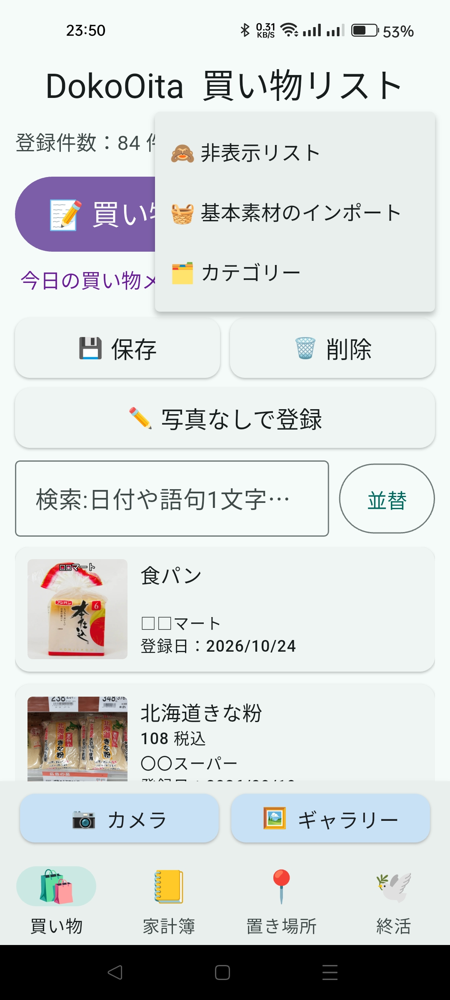
📒 家計簿
レシートの管理と、家計簿の記録・集計です。
レシート管理
- 🧾 レシート登録：レシートを撮ると、AIが店名・品名・金額を読み取ります（先に、⚙設定でAIのキーを登録します）。手入力もできます。
- 📊 レシート集計・✏️ レシート編集：期間を決めて集計したり、直したりします。
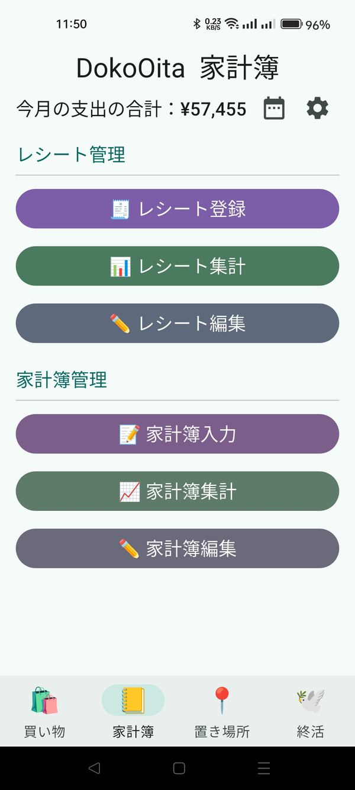
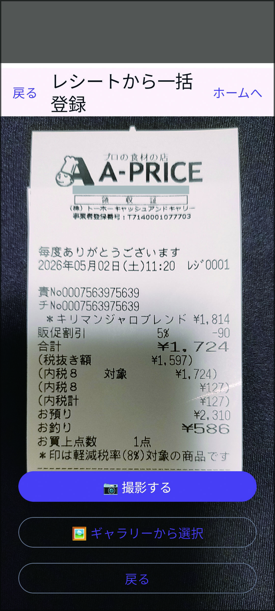
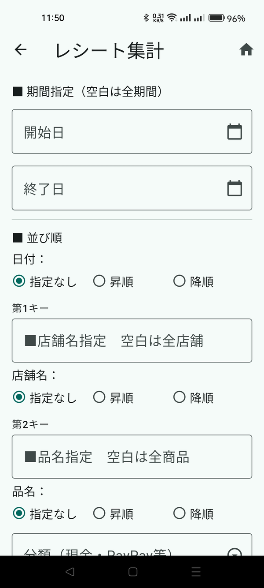
家計簿管理
- 📝 家計簿入力：支払先・日付・種別・金額を入れて、1件ずつ登録します。レシートから引き継ぐこともできます。
- 📈 家計簿集計・✏️ 家計簿編集：集計や修正をします。
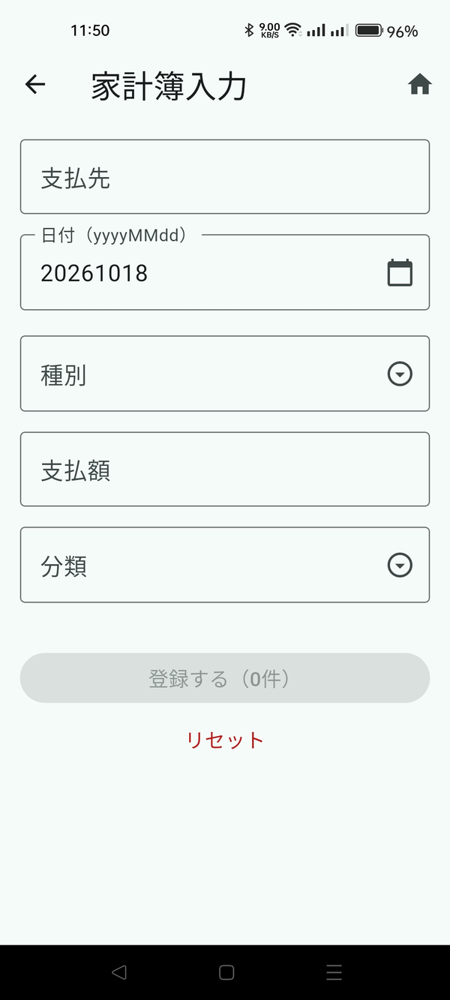
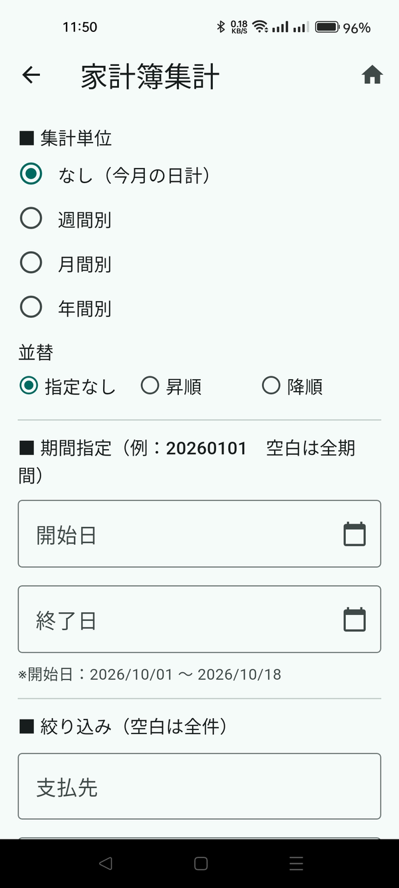
収入も記録する（多機能モード）
- ⚙設定の「家計簿のモード」で「多機能モード」を選びます。
- 「📝 家計簿入力」の上にある「支出／収入」で「収入」を選び、収入元・日付・種別・収入額などを入れます。
- 集計・編集・データ出力でも、収入が一緒に扱われます（集計では、「支出」「収入」「すべて」から選べます）。
- 画面の上には、今月の収入・支出・差し引きが出ます。「簡単モード」に戻しても、収入データは消えません。
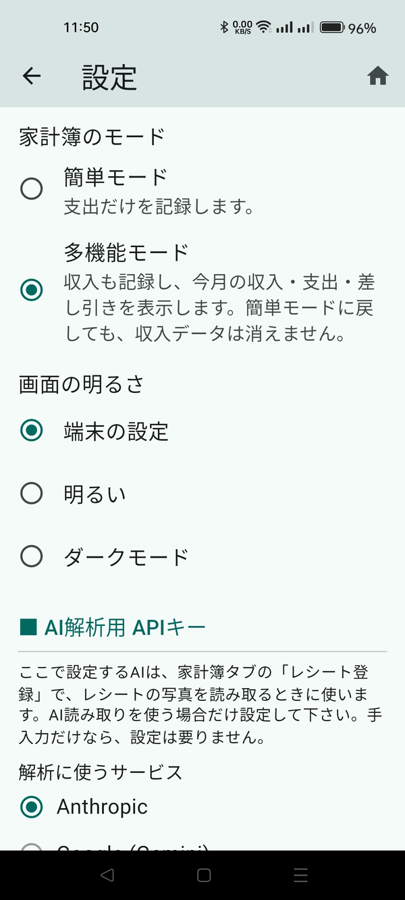
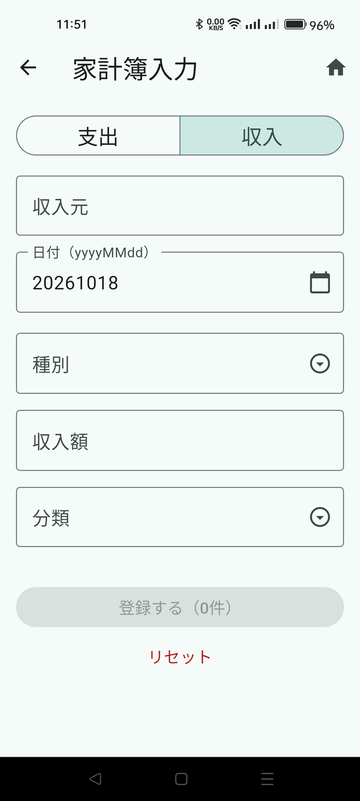
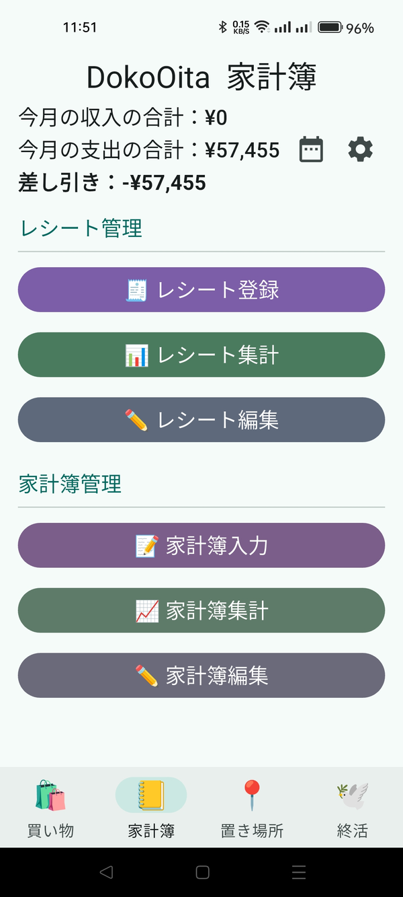
選べる項目の編集
- 入力欄の右の「▼」を押すと、種別や分類を一覧から選べます。
- その一覧の下の「この一覧を編集する」を押すと、項目を追加・削除したり、左の「≡」を動かして順番を変えたりできます（30個まで。「初期の状態に戻す」もあります）。「保存」を押すまでは変わりません。
- 項目を消しても、すでに入れたデータの言葉は変わりません。
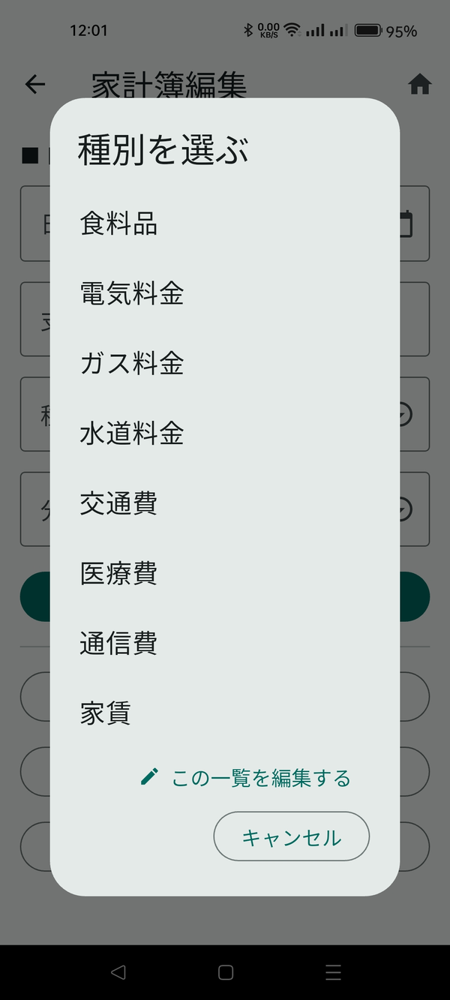
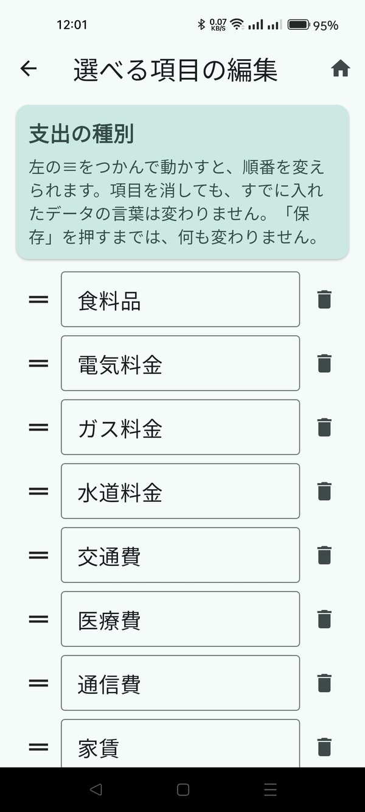
データ管理
- 💾 データ出力：家計簿タブで⚙設定を開き、「データ出力」を押します。家計簿・レシートを、CSVやPDFで保存・共有できます。
- 画面の上に、今月の支出の合計が出ます。右の「📅」を押すと、開始日と終了日を入れて、期間を指定できます（アプリを閉じると今月に戻ります）。
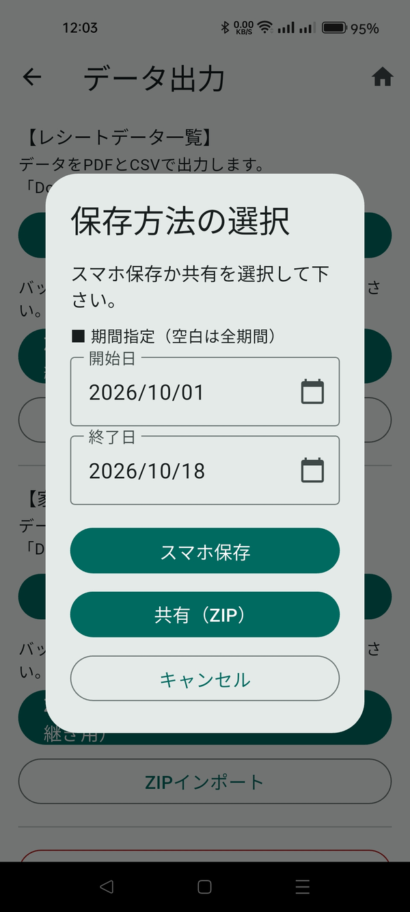
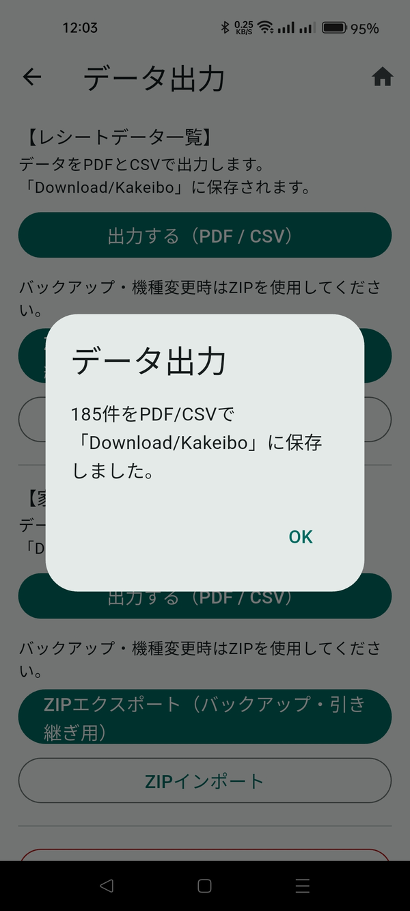
📍 置き場所
しまい込んだ物の場所を、写真で記録します。
- 📷カメラか🖼️ギャラリーで写真を選び、名前・置き場所・部屋・メモを入れます。
- 探すときは、上の検索欄に言葉を入れます。
- 「並替」で、並び順を変えられます。
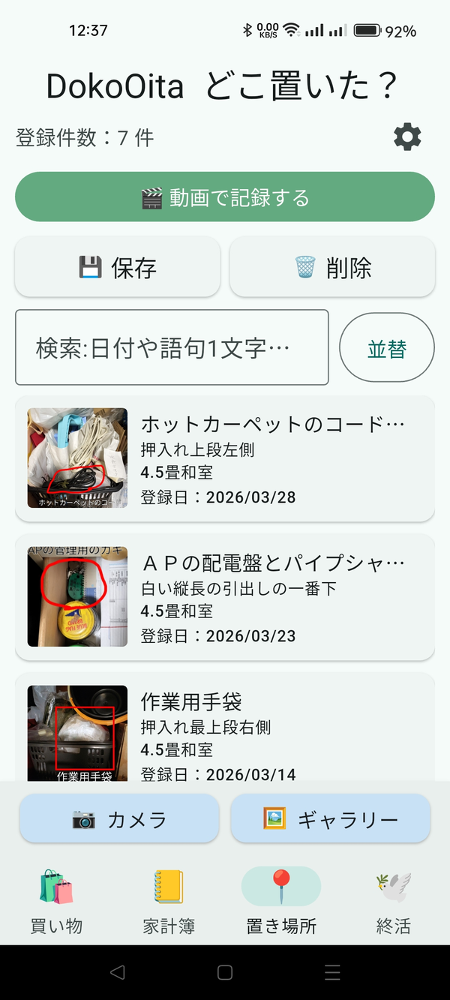
動画でも記録できる
- ホームの「🎬 動画で記録する」を押し、「録画開始」で録画、「停止」で終わります（最長60秒。録画の前に「縦で撮る」「横で撮る」を選べます）。そのあと、名前などを入れて「完了」で保存します。
- 動画は、一覧では最初の画面に▶が付いて出ます。詳細画面の「▶ 動画を再生」で、アプリの中で見られます。
- 動画は、スマホの動画フォルダ（Movies）の「DokoOita」に入ります。
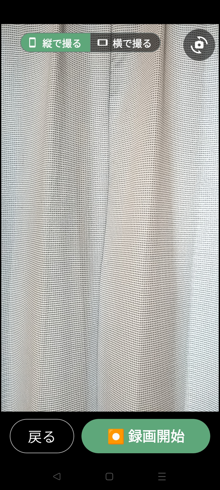
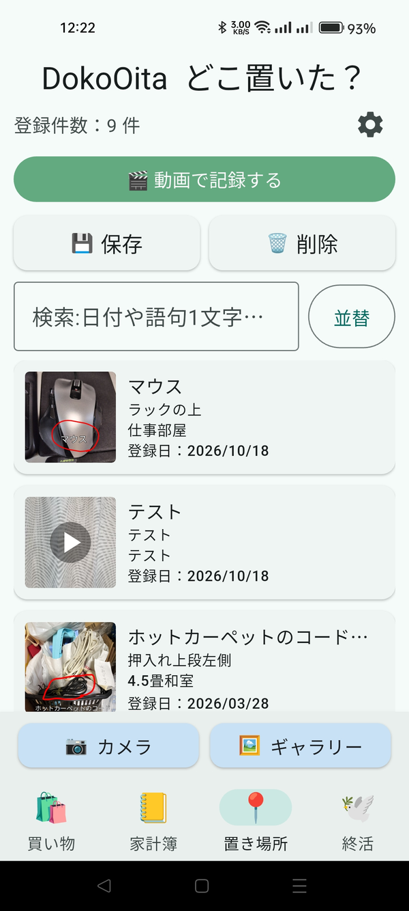
🕊️ 終活
大切な物や、家族に伝えたいことを記録します。
入れる項目は、宛名・品名等・資産種別・伝言です。使い方は「置き場所」と同じです。
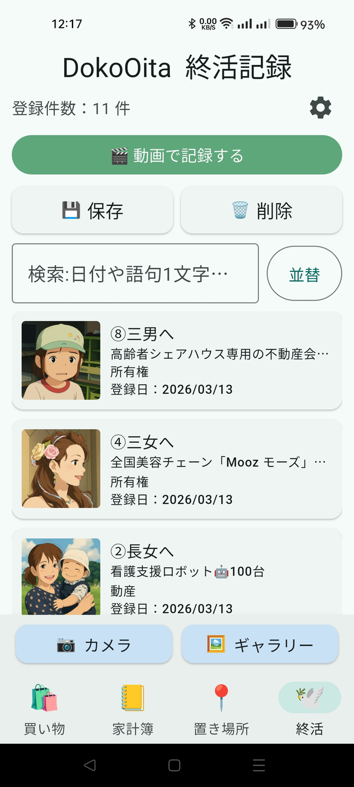
📷 新しく登録する流れ
置き場所・終活に、写真つきで登録する手順です。
- カメラかギャラリーを押す📷カメラか🖼️ギャラリーを押します。
- 写真を撮るか、選ぶ写真を撮るか、選びます。
- 写真に文字や丸印を入れる文字や丸印を写真に入れたいときは、先に「画像編集」を押します（文字は音声入力もできます）。
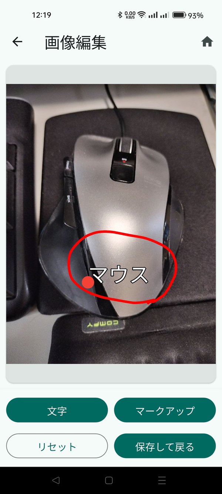
スクショ S29画像編集の画面（文字・丸印を入れる）ファイル名：images/s29_image_edit.png - 各項目を入れて「完了」各項目を入れて、「完了」で保存します。
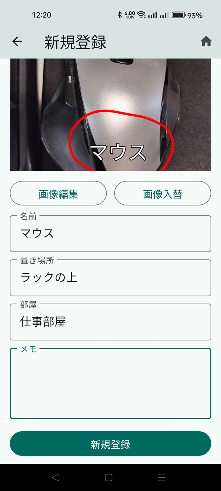
スクショ S30登録の入力画面（名前・置き場所・部屋・メモ）ファイル名：images/s30_register_form.png
あわせて知っておくと便利なこと
- 同じ内容がすでにあるときは、「重複データがあります」と出ます。
- 登録したあとでも、「編集」の「画像入換」で写真を変えられます。
- 動画で登録するときは、ホームの「🎬 動画で記録する」を押します（置き場所・終活のタブ）。録画のあと、各項目を入れて「完了」で保存します。
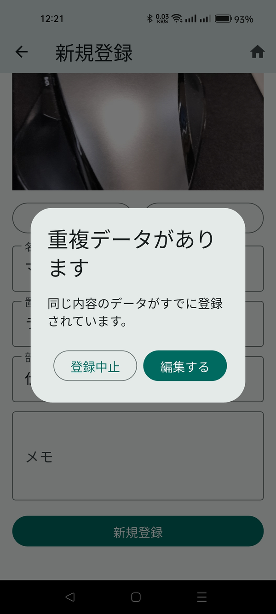
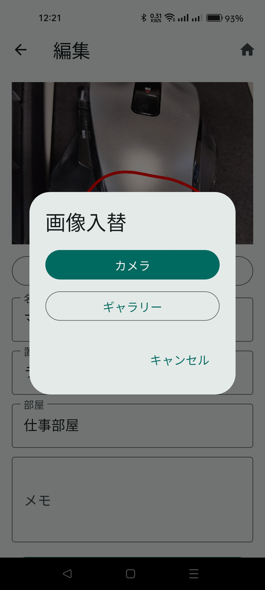
🏠 ホーム画面の使い方
検索・並替・保存・削除・設定です。
- 【検索】登録した言葉や、登録日（04・2026・202604・20260412のような数字）で探せます。「コスモスORアルク」のように OR でつなぐと、複数の言葉を一度に探せます。
- 【並替】検索欄の右の「並替」で、並び順を変えられます。
- 【保存】スマホ保存か共有（ZIP）で、バックアップを取ります。
- 【削除】いらないデータを選んで、または全部まとめて削除します。
- 【⚙設定】右上の⚙から開きます。
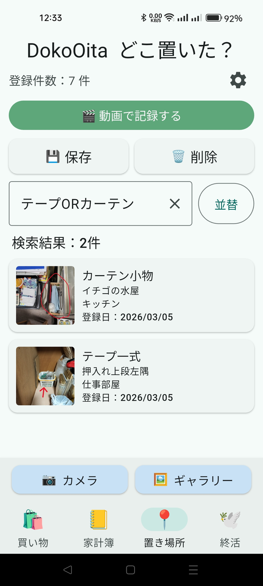
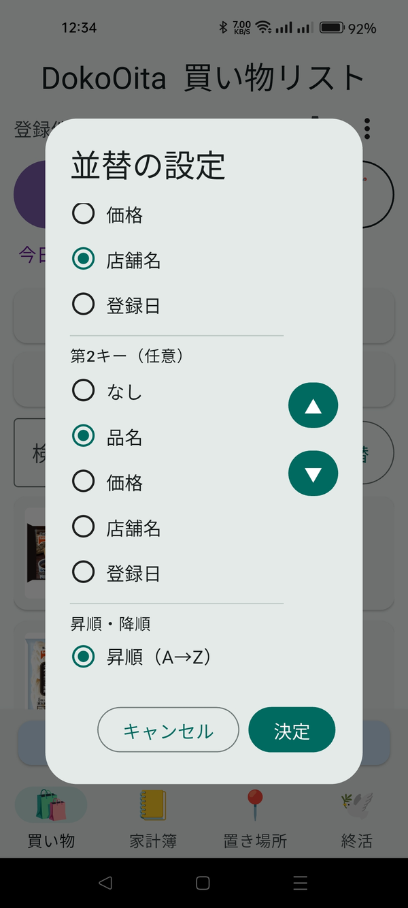
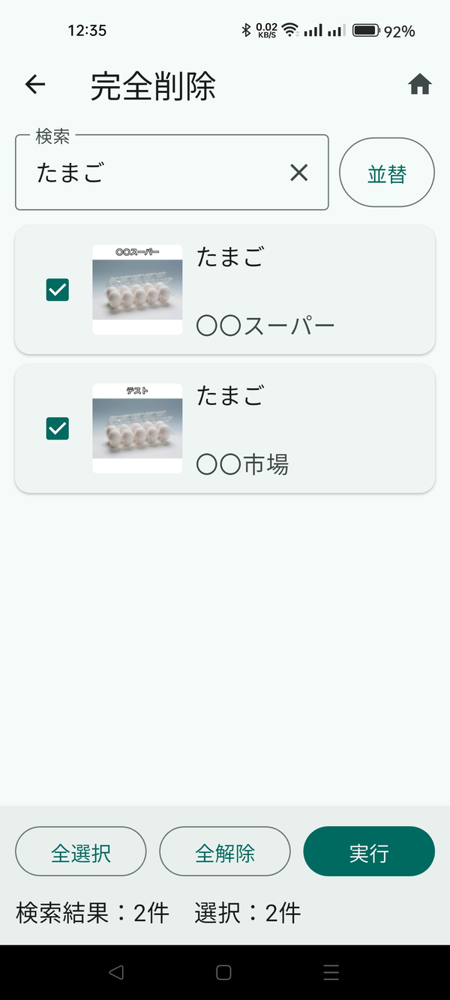
📄 詳細画面
一覧から1件を開いた画面です。
- 写真をさわると、大きく見られます。
- 左右になぞるか、◀▶で、前後のデータに移れます。
- 「編集」で直せます。「削除」は元に戻せません。
- 「共有」で、登録事項つきの写真を、LINEやメールで送れます。
- 動画の項目は、「▶ 動画を再生」で見られます。「共有」では、動画のファイルがそのまま送られます（全件のときはZIPにまとめて送ります）。
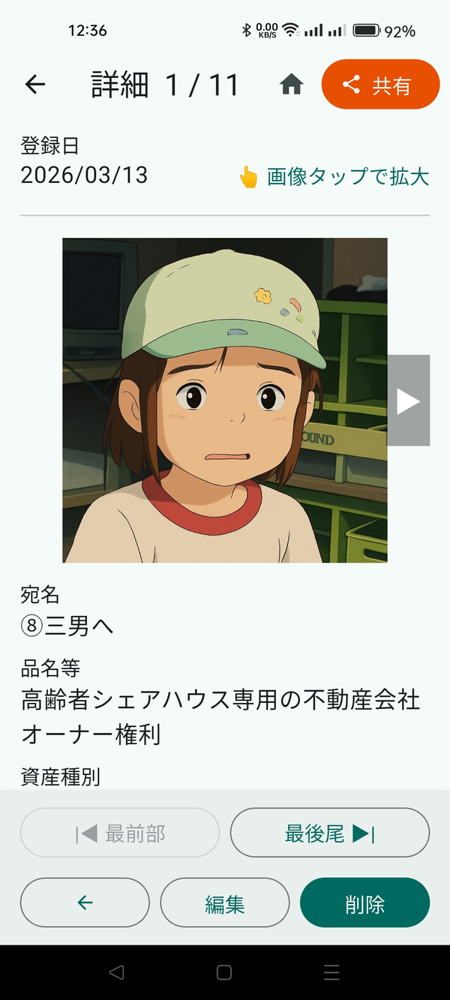
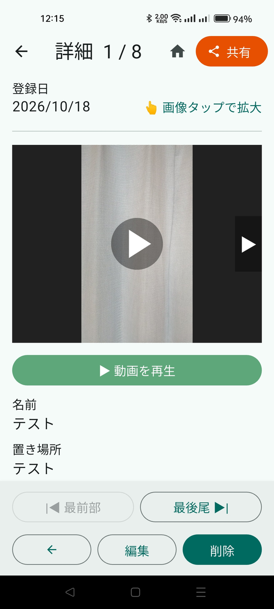
✏️ 項目一括編集（⚙設定）
登録した言葉を、まとめて直せます。
- 対象と項目を選ぶ対象のデータと、直したい項目を選びます。
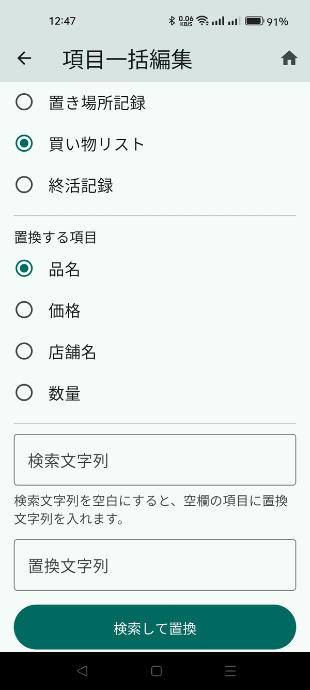
スクショ S38項目一括編集の画面ファイル名：images/s38_bulk_edit.png - 言葉を入れる「検索文字列」に今の言葉、「置換文字列」に新しい言葉を入れます。
- 検索して置換する「検索して置換」を押し、件数を確認してOKを押します。
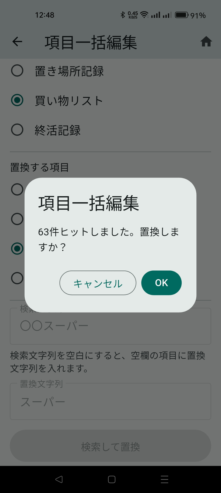
スクショ S39置換の件数を確認する画面ファイル名：images/s39_bulk_confirm.png
- 「置換文字列」を空白にすると、その言葉が消えます。
- 「検索文字列」を空白にすると、空欄の項目に言葉を入れられます。
💾 データの出力・読み込み（⚙設定）
データを書き出したり、読み込んだりします。
- 【PDF・CSV】登録データを、スマホに保存したり、共有したりします。
- 【ZIPエクスポート】写真つきで、全データを書き出します。同じアプリを使う人に渡せます。
- 【ZIPインポート】受け取ったZIPを読み込みます。すでに入っているデータは、重ねて入りません。
- 家計簿・レシートの出力は、家計簿タブで⚙設定を開き、「データ出力」から行います。
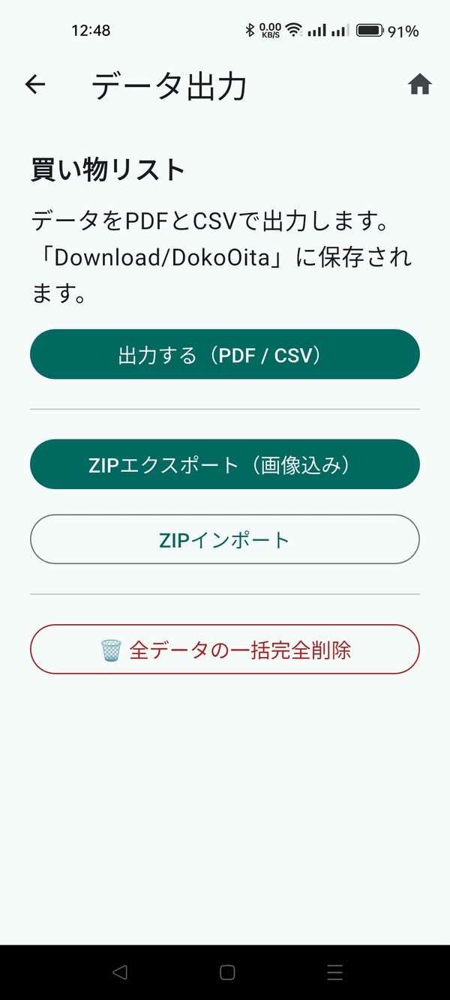
動画は、ZIPエクスポートには入りません（写真だけが入ります）。動画は、スマホの動画フォルダ（Movies）の「DokoOita」にあるので、新しいスマホへは別に移して下さい。